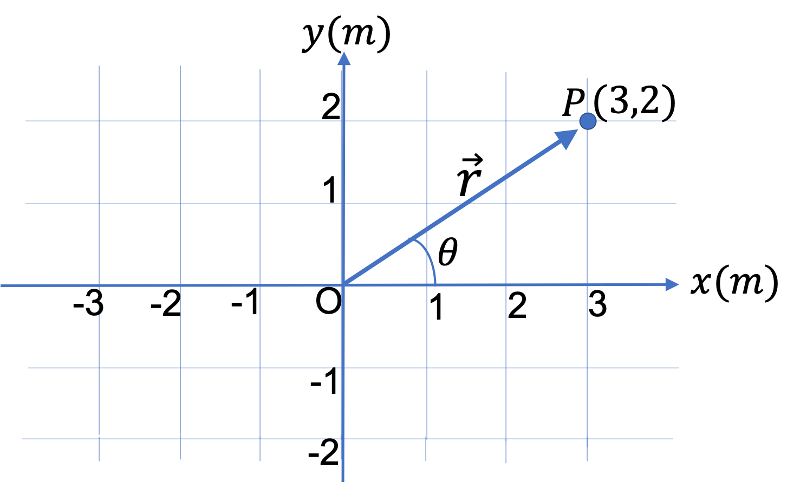
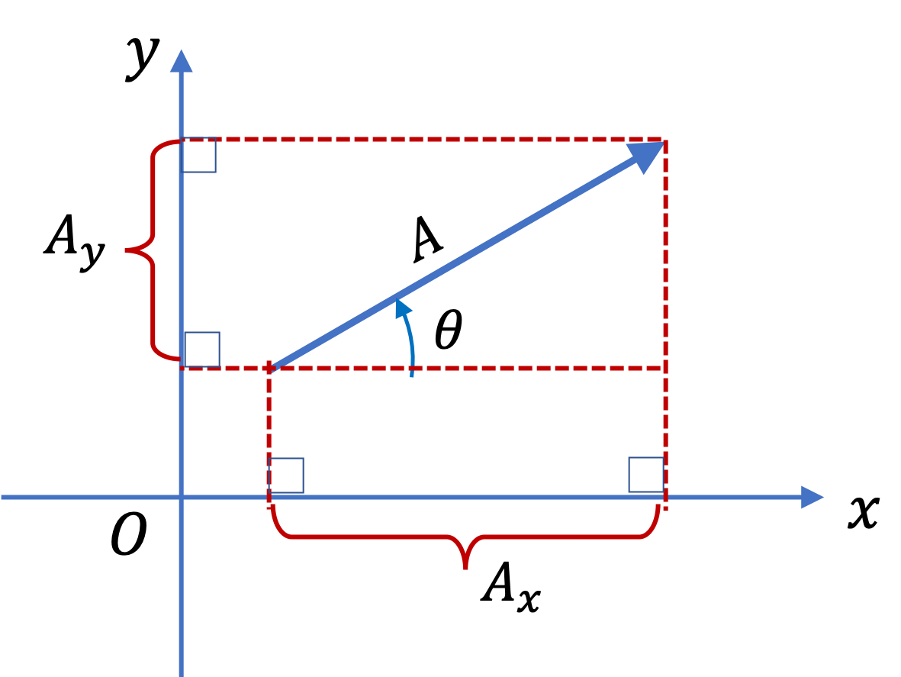
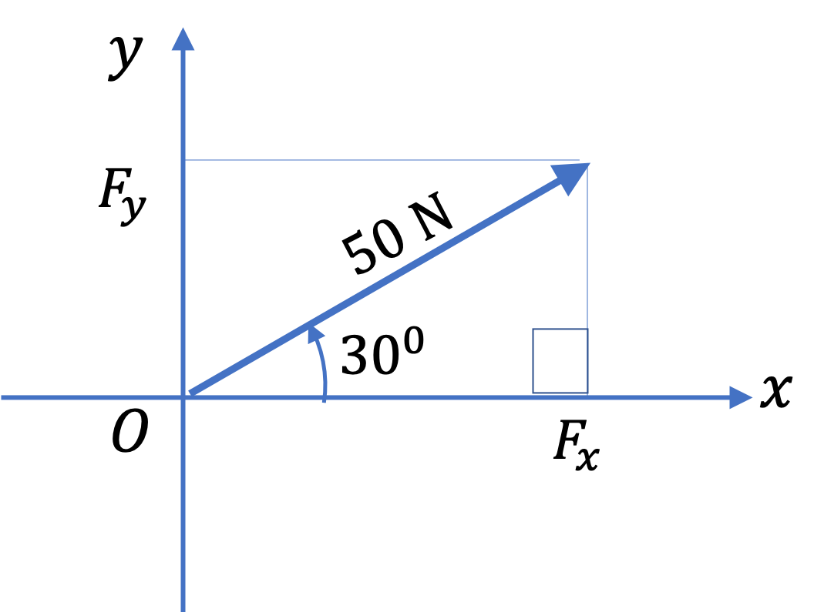
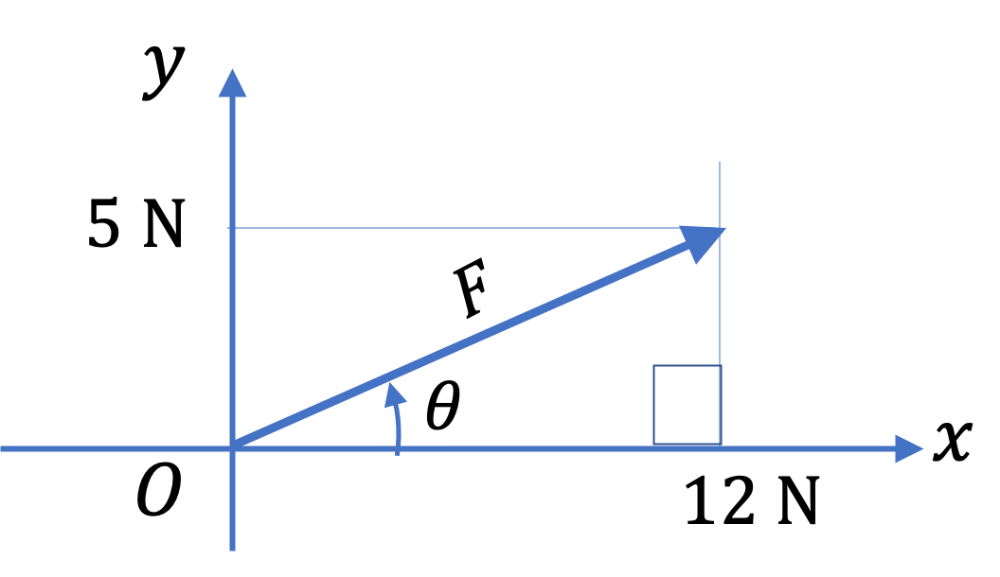
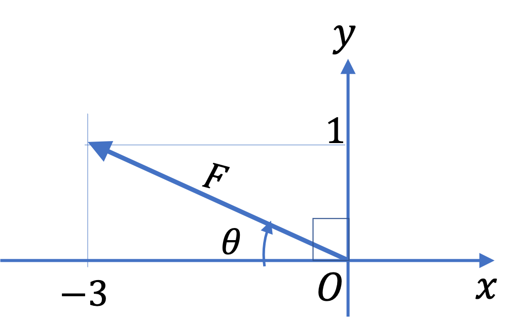
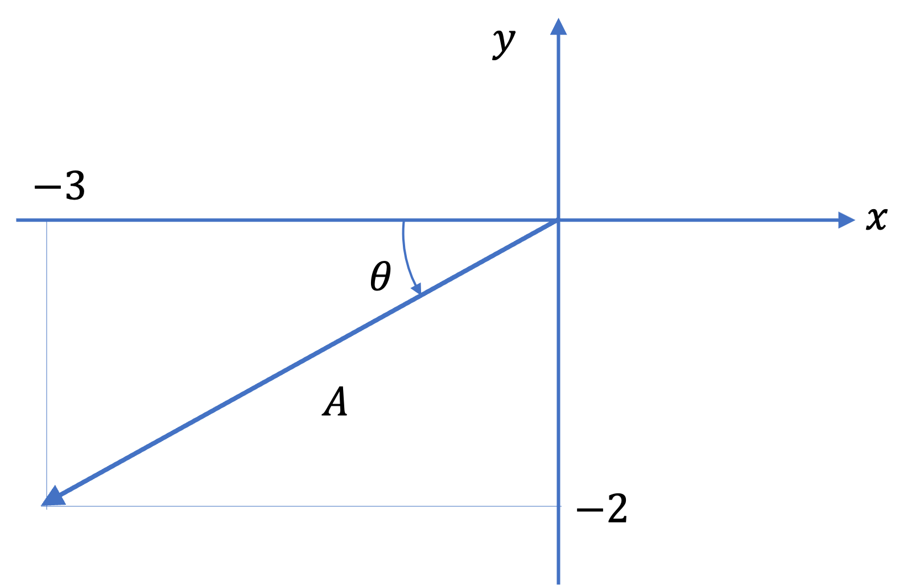
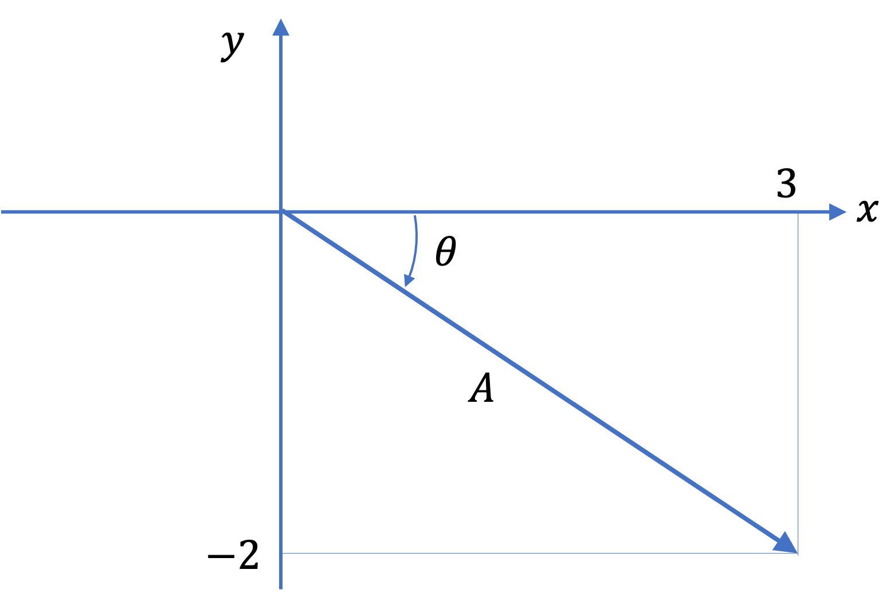

A vector can be represented by an arrow of appropriate size and in appropriate direction in the relevant space. For instance, a position vector will be an arrow from the origin to the location of the object in space since prosition is just a displacement from origin to the location in space. You can also represent a vector analytically, i.e., by numbers. One such representation uses Cartesian axes to represent vectors. There are other types of components corresponding to other coordinate systems. We will cover them in due course.
Subsection3.2.1Arrow Representation
Representing vectors and doing mathematics using arrows is the most visual way to get handle on vectors.
Subsection3.2.2Position Vector
Let us begin our studies of vectors by an example position vector (arrow from O to P) of an object at point P in the \(xy\) plane of a Cartesian coordinate system whose axes are appropriately tick-marked as shown in Fig. Figure 3.2.1. We will denote the position vector by the symbol \(\vec r \text{.}\) The \((x,y)\) coordinates of P are \((3\text{ m}, 2\text{ m}) \text{.}\)

Figure3.2.1.Illustrating the position vector of an object located at point P. The arrow labeled \(\vec r \) represents the position vector - the length of the arrow represents the magnitude and angle \(\theta \) can be used to indicate the direction of the vector. Sometimes we call \(\theta \) itself the direction of the vector.
The coordinates \(x = 3\text{ m}\text{,}\) and \(y = 2\text{ m} \) of the tip of the position vector are called \(x \) and \(y \) components of the position vector \(\vec r \text{.}\) The magnitude of this vector is the length of the arrow, which can be obtained from \(x \) and \(y\text{.}\)
The direction is then described as: the vector \(\vec r \) is in the direction of \(33.7^{\circ}\) counterclockwise from positive \(x\) axis.
The angle \(\theta\) is not direction. You will get \(\theta = 33.7^{\circ}\) for the exactly opposite direction, the direction from origin towards the point \((-3\text{ m}, -2\text{ m})\text{.}\) You can check it out. So, once you obtain the angle, you must describe the direction in words!
We now summarize the mathematical relations between the polar-form \((r, \theta)\) and the coordinate-form \((x,y) \) of position vector.
\begin{align}
\amp x = r \cos\theta \tag{3.2.1}\\
\amp y = r \sin\theta \tag{3.2.2}\\
\amp r = \sqrt{x^2 + y^2}\tag{3.2.3}\\
\amp \theta = \tan^{-1}\left( \dfrac{y}{x}\right)\tag{3.2.4}
\end{align}
Subsection3.2.3The Displacement Vector
Unlike the position vector, displacement vector goest from an arbitrary point A to another point B rather than always going from origin O to some point P.
Every vector can be drawn the same way as the position vector with length of the arrow representing the magnitude of the vector and the orientation of the arrow representing the direction.
The projections of the tip and tail of a vector, \(\vec A\text{,}\) on the Cartesian axis give us the information from which we obtain Cartesian components of the vector. We denote the components of vectors by attaching letters \(x \) or \(y \) as subscripts, and the magnitude by the same symbol without the arrow overhead, as shown in the figure to the right.
Figure3.2.2.
The \(x\)-component of the vector, \(A_x\text{,}\) is difference of the projection of tip and tail on \(x\)-axis, and similarly for the \(y\) component. The relation between magnitude \(A\text{,}\) angle \(\theta\text{,}\) and components \(A_x\) and \(A_y\) is same as those between \(r\text{,}\)\(\theta\text{,}\) and \(x\) and \(y\) respectively.
For instance, \(x\) and \(y \) components of a velocity vector \(\vec v\) would be represented by symbols \(v_x \) and \(v_y\text{,}\) respectively, and magnitude by symbol \(v\text{.}\) They are related by
For another property let us look at a force vector, The \(x\) and \(y \) components of a force vector \(\vec F\) would be represented by symbols \(F_x \) and \(F_y\text{,}\) respectively, and magnitude by symbol \(F\text{.}\) The relations are similar.
For example, if we have a force \(\vec F \text{,}\) say of magnitude \(50\text{ N} \) in the \(30^{\circ} \) North of East direction, then we will draw an arrow of appropriate size.
If we use a scale of \(1\text{ cm representing } 5\text{ N} \text{,}\) then we will draw a \(10\text{ cm}\)-long arrow, starting at origin and pointing in the direction of \(30^{\circ} \) counteclockwise to the positive \(x \) axis where I assume \(x \) axis is pointed towards East and \(y \) axis is towards North.
This will give the following component form of this force vector \(F_x = 50\text{ N }\cos\, 30^{\circ} = 43.3 \text{ N}\) and \(F_y = 50\text{ N }\sin\, 30^{\circ} = 20\text{ N}\text{.}\)
Figure3.2.4.
Checkpoint3.2.5.Magnitude and Direction of a Vector in 2D from Components.
The position of a box on the floor with respect to a corner of the room, taken to be the origin, and the walls which are taken to be \(x\) and \(y\)-axes, is given by the \((x,y) = (4.0\text{ m}, 3.0\text{ m})\text{.}\) What are the magnitude and direction of the position vector of the box?
Hint.
Just use the \((x,y) \rightarrow (r, \theta) \text{.}\)
Checkpoint3.2.6.Components of a Vector from Magnitude and Direction in 2D.
A box is at a distance of \(5.0 \text{ m}\) from the origin. The direction of the location of the box makes an angle of \(30^{\circ} \) with respect to the direction of a wall taken to be the positive \(x \) axis. Another wall that is perpendicular to the \(x \) axis wall is taken to be the \(y \) axis. Find the \(x \) and \(y \) components of the position vector.
Hint.
Just use the \((r, \theta) \rightarrow (x,y) \text{.}\)
Checkpoint3.2.7.Components of Velocity Vector of a Cricket Ball in a Horizontal-Vertical Plane.
A batsman strikes a cricket ball, which leaves the bat with a speed of \(20.0\text{ m/s}\text{,}\) and flies in the direction of \(60^{\circ}\) with respect to the horizontal direction. This means that the velocity vector has magnitude \(20.0\text{ m/s}\) and direction \(60^{\circ}\) with respect to the horizontal direction. Taking the horizontal direction as the \(x\)-axis and the vertical direction as the \(y \) axis, find \(x \) and \(y\) components of the velocity vector.
Hint.
Use the \((r, \theta) \rightarrow (x,y)\) transformation.
Checkpoint3.2.8.Components of Velocity Vector of a Soccer Ball in a Horizontal-Vertical Plane.
A soccer ball is kicked in the direction \(30^{\circ}\) above the horizontal direction with speed \(15 \text{ m/s}\text{.}\) This means that the velocity vector of the ball has magnitude \(15 \text{ m/s}\) and direction \(30^{\circ}\) above the horizon. Find the coordinate representation of the velocity in a coordinate system in which \(x \) axis is along horizontal direction and positive \(y \) axis is pointed up.
Hint.
Use \(x = r\, \cos\, \theta\text{.}\)
Checkpoint3.2.9.Magnitude and Direction of Velocity from Components.
A velocity vector was found to have the following components, \(v_x = 30.0\text{ m/s}\) and \(v_y = 40.0\text{ m/s}\) with respect to a coordinate system in which \(x \) axis is along horizontal direction and positive \(y \) axis is pointed up. What are the magnitude and direction of the velocity vector? Describe your direction in words.
Hint.
Use \(r=\sqrt{x^2 + y^2} \) and \(\theta = \tan^{-1}(y/x) \text{.}\)
Checkpoint3.2.10.Magnitude and Direction of Velocity from Components - 2.
A velocity vector was found to have the following components, \(v_x = 30.0\text{ m/s}\) and \(v_y = -40.0\text{ m/s}\) with respect to a coordinate system in which the \(x \) axis is along horizontal direction and the positive \(y \) axis is pointed up. What are the magnitude and direction of the velocity vector? Describe your direction in words.
Hint.
Use \(r=\sqrt{x^2 + y^2} \) and \(\theta = \tan^{-1}(y/x) \text{.}\)
Checkpoint3.2.12.Magnitude and Direction of Force.
A suitcase is draged by applying a force on the strap attached to the suitcase.
With respect to a Cartesian coordinate system that has the \(x \) axis along the horizontal direction and the \(y \) axis vertically up, the components of the force are \((F_x, F_y) = (12.0\text{ N}, 5.0\text{ N}) \text{,}\) where N stands for the unit Newton.
Figure3.2.13.
What are the magnitude and direction of the force? You can use the symbol \(F \) for the magnitude and \(\theta \) for the angle with respect to the \(x \) axis.
Hint.
Use the \((x,y) \rightarrow (r, \theta) \) transformation.
Checkpoint3.2.14.Direction in the Second Quadrant.
A vector has \((A_x, A_y) = (-3, 1) \text{.}\) What is the direction of this vector with respect to the negative \(x \) axis?
Figure3.2.15.
Hint.
Note arc-tangent will give you a negative angle. You need to appropriately add or subtract \(180^{\circ}\text{.}\)
Checkpoint3.2.17.Direction in the Third Quadrant.
A vector has \((A_x, A_y) = (-3, -2) \text{.}\) What is the direction of this vector with respect to the negative \(x \) axis?
Figure3.2.18.
Note arc-tangent will give you a positive angle, which is what you also get if the vector is pointed in the first quadrant. But, this vector is pointed in the third quardant. Therefore, you need to appropriately add or subtract \(180^{\circ}\text{.}\)
Hint.
Use the arctan formula.
Checkpoint3.2.20.Direction in the Fourth Quadrant.
A vector has \((A_x, A_y) = (3, -2) \text{.}\) What is the direction of this vector with respect to the positive \(x \) axis?
Note: the arc-tangent will give you a negative angle.
Figure3.2.21.
Hint.
Note that negative angle means clockwise angle.
Checkpoint3.2.23.Practice Computing Magnitudes and Stating Directions.
Clearly, if you have the \((x,y) \) of an object, you can get the position vector by computing the \(r \) and \(\theta \text{.}\)
Draw position vectors of objects at the following coordinates and find their magnitudes and directions.
\((-1\text{ m}, 2\text{ m}) \text{,}\)
\((-3\text{ m}, -2\text{ m}) \text{,}\)
\((3\text{ m}, -1\text{ m}) \text{.}\)
Hint.
Use \((x,y) \rightarrow (r, \theta) \) equations.
Checkpoint3.2.25.Components of a Force Vector from Magnitude and Direction in First Quadrant.
A force vector \(\vec F \) has magnitude \(50\text{ N} \) and is pointed in the direction \(30^{\circ} \) North of East. Let \(x \) axis be pointed towards East and \(y \) axis towards North.
>
(a) Draw a figure to display this vector, stating the scale you used in your drawing.
(b) Find the \(x \) and \(y \) components, \(F_x \) and \(F_y \text{,}\) of this vector.
Hint.
The \((F_x, F_y) \) have the same relation to \((F, \theta) \) as do \((x,y)\) to \((r, \theta) \text{.}\)
Checkpoint3.2.27.Components of a Force Vector from Magnitude and Direction in the Fourth Quadrant.
A force vector \(\vec F \) has magnitude \(50 \) N and is pointed in the direction \(30^{\circ} \) South of East. Let \(x \) axis be pointed towards East and \(y \) axis towards North.
(a) Draw a figure to display this vector, stating the scale you used in your drawing.
(b) Find the \(x \) and \(y \) components, \(F_x \) and \(F_y \text{,}\) of this vector.
Hint.
The \((F_x, F_y) \) have the same relation to \((F, \theta) \) as do \((x,y)\) to \((r, \theta) \text{.}\) Be mindful the quadrant and take care of signs of components accordingly.
Checkpoint3.2.29.Magnitude and Direction of a Force Vector from Components in the Second Quadrant.
The \(x \) and \(y\) components of a force vector are given to be \(F_x = -30\text{ N}\) and \(F_x = 40\text{ N}\text{.}\) What are the magnitude and direction of this force?
Hint.
use \((x,y)\) to \((r, \theta)\) and interpret the angle.